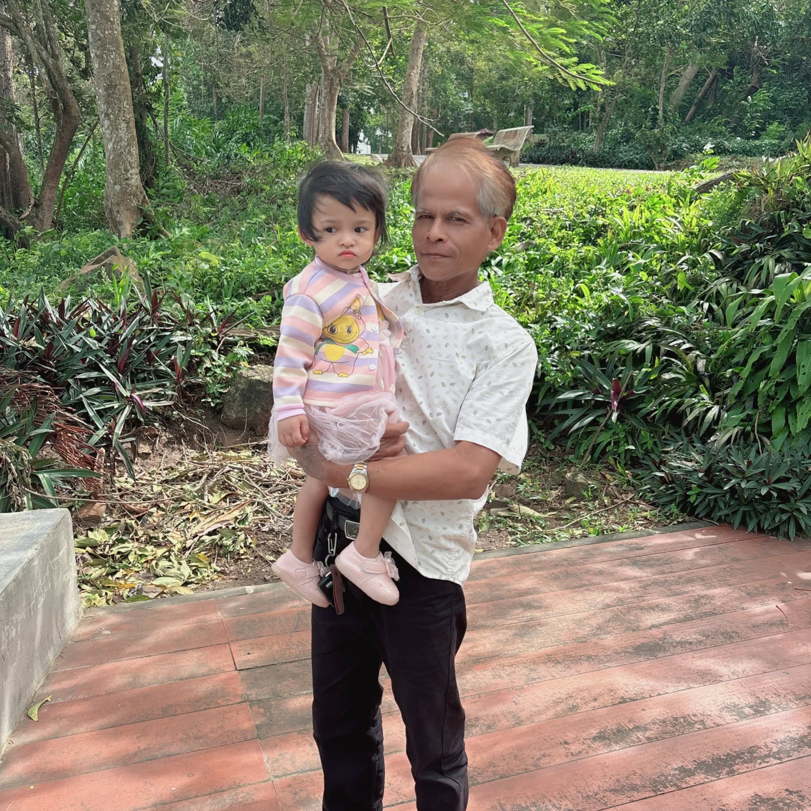
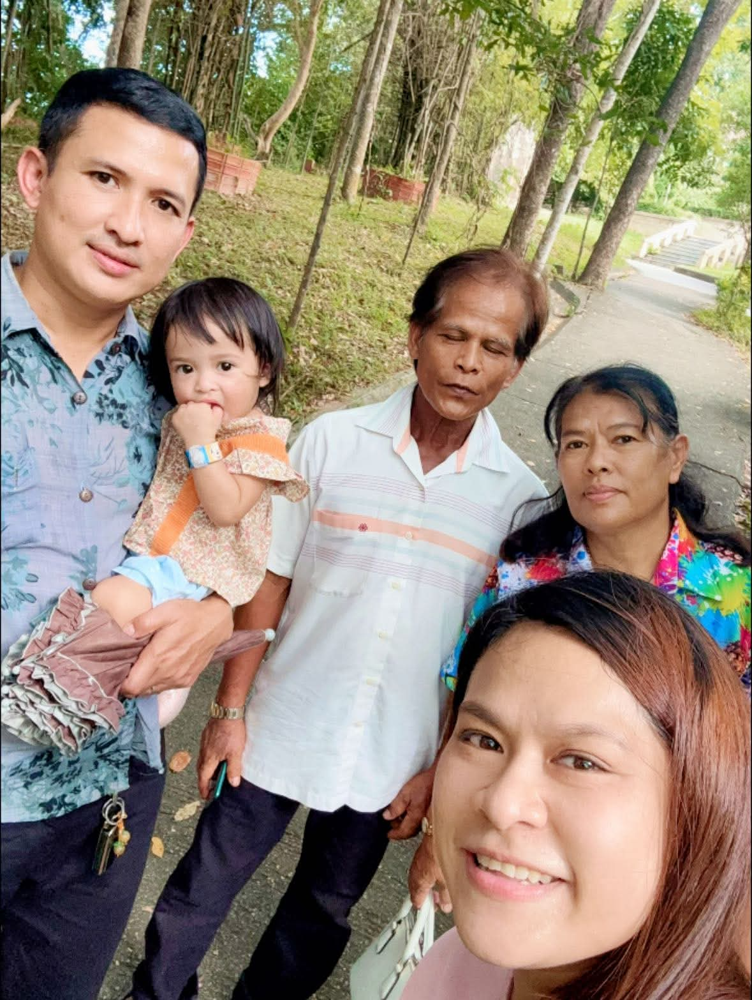
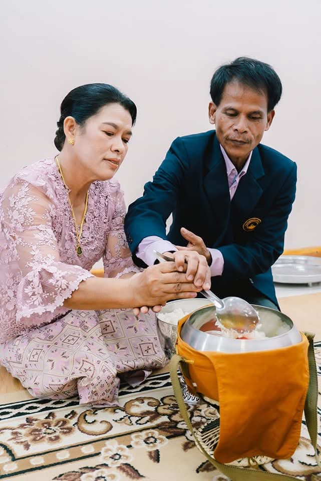
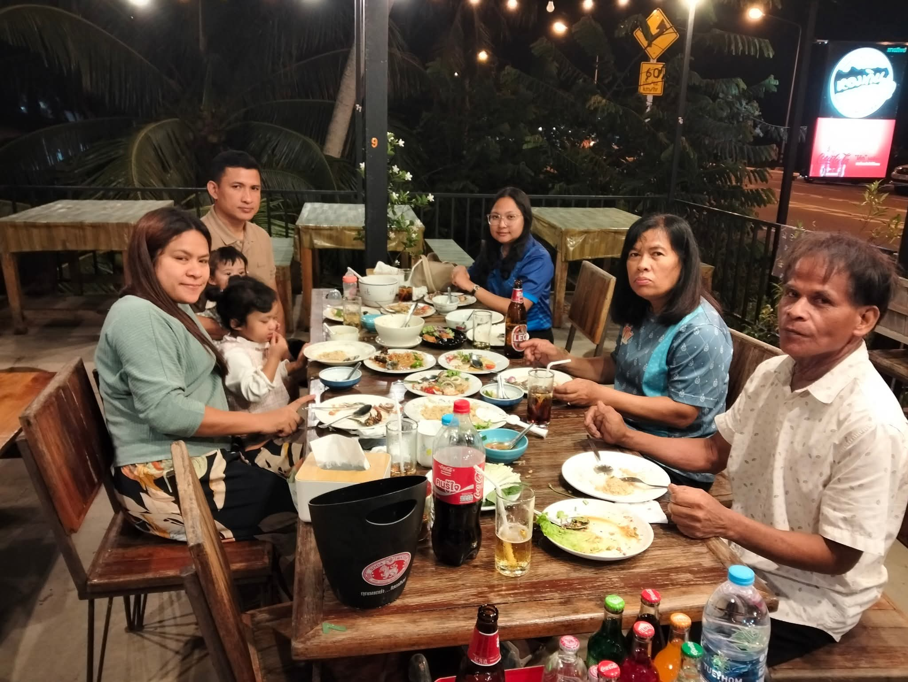
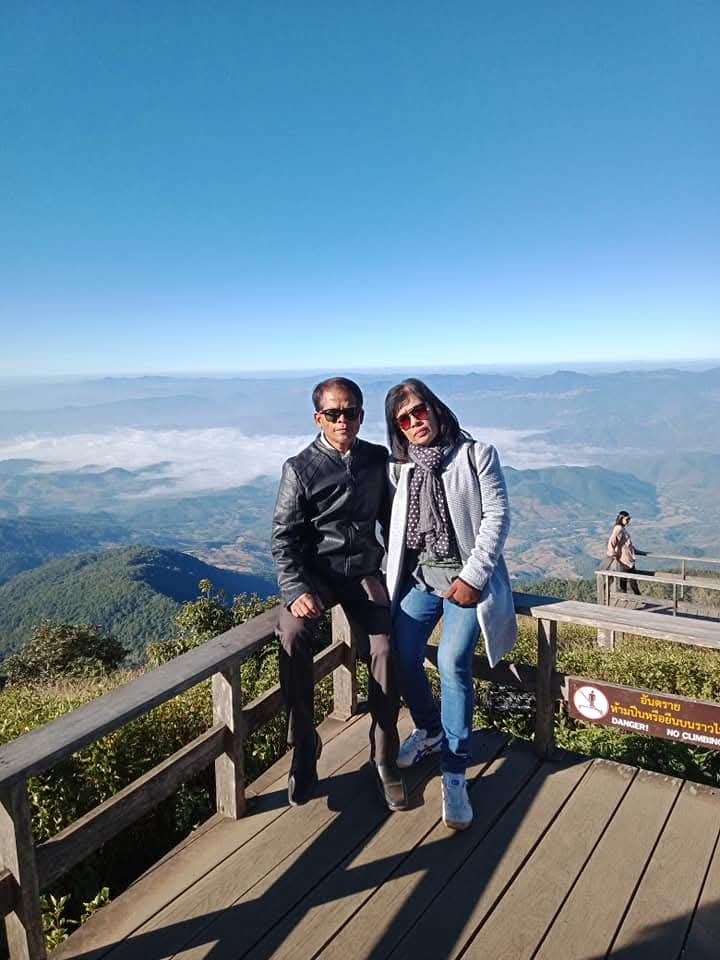
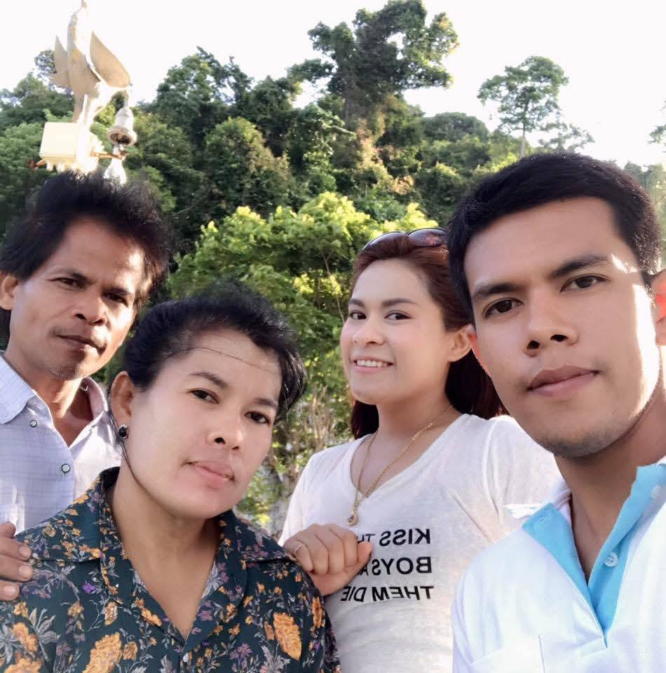

01
ความอบอุ่น
รอยยิ้มของพ่อทำให้บ้านของเรามีความหมายมากกว่าคำว่าบ้าน
A LITTLE LETTER FROM YOUR SON
ขอบคุณสำหรับทุกอย่างที่พ่อทำให้ครอบครัวเสมอมา
OUR MEMORIES
บางช่วงเวลาอาจผ่านไปเร็ว แต่ความทรงจำของเรายังคงอยู่เสมอ

รอยยิ้มของพ่อทำให้บ้านของเรามีความหมายมากกว่าคำว่าบ้าน

ขอบคุณที่พ่อเป็นคนที่คอยอยู่ข้าง ๆ และทำให้พวกเรารู้ว่าไม่ว่าจะเกิดอะไรขึ้น เรามีกันเสมอ

ทุกความเหนื่อยที่พ่อเคยผ่านมา กลายเป็นความมั่นคงและโอกาสดี ๆ ของลูก

อยากให้พ่อมีเวลาได้พัก ได้เที่ยว และมีความสุขกับทุกวันให้มากที่สุด

ไม่ว่าจะผ่านไปกี่ปี ลูกก็ยังอยากเห็นพ่อมีรอยยิ้มแบบนี้ไปนาน ๆ

สิ่งหนึ่งที่ลูกอยากบอกพ่อเสมอ คือ “รักพ่อมากนะครับ”
FROM YOUR SON
ในวันเกิดของพ่อปีนี้ ลูกอยากขอบคุณพ่อสำหรับทุกสิ่งทุกอย่าง ทั้งสิ่งที่พ่อเคยทำให้ และหลาย ๆ อย่างที่พ่ออาจไม่เคยรู้เลยว่ามันมีความหมายกับลูกมากแค่ไหน
ขอบคุณที่เป็นกำลังใจ เป็นที่พึ่ง และเป็นคนหนึ่งที่ทำให้ลูกเติบโตขึ้นมาได้อย่างทุกวันนี้ ลูกอาจไม่ได้พูดคำว่ารักบ่อย ๆ แต่ลูกอยากให้พ่อรู้ว่า ลูกภูมิใจที่ได้เป็นลูกของพ่อเสมอ
ขอให้ปีนี้เป็นปีที่พ่อมีความสุขมาก ๆ สุขภาพแข็งแรง มีแต่เรื่องดี ๆ เข้ามาในชีวิต ได้ทำในสิ่งที่อยากทำ ได้ไปในที่ที่อยากไป และมีรอยยิ้มในทุก ๆ วัน
รักพ่อเสมอ
จากลูก 🤍